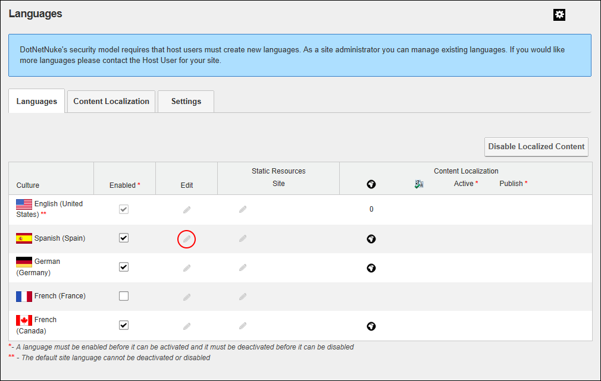
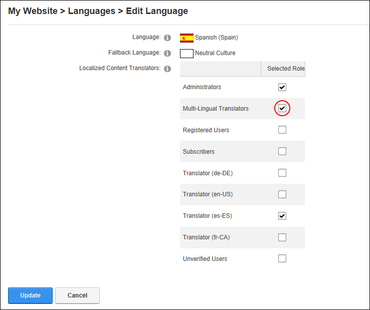

Setting Translator Roles
How to enable or disable one or more roles to have Edit Rights to translate all new pages and localized modules for a language using the Languages module. Note: A translator role is automatically created for each language upon creation of localized content. This tutorial explains how to add additional roles if required.
In DNN Platform, any user (including unauthenticated users) who is granted Edit Module permissions. In Evoq Content and Evoq Content Enterprise, any user (including unauthenticated users) who is granted Edit Content permissions.
- Navigate to Admin > Advanced Settings >
 Languages - OR - Go to a Languages module.
Languages - OR - Go to a Languages module.
- Select the Languages tab.
- In the Edit column of the Culture grid, click the Edit This Language
 button beside the required language. This opens the Edit Language page.
button beside the required language. This opens the Edit Language page.

- At Localized Content Translators go to the Selected Role column and beside each role that can translate this language. Note: The translator role associated with this role (e.g. Translator (es-ES) ) is already checked by default. - OR - beside a role to remove it.

-